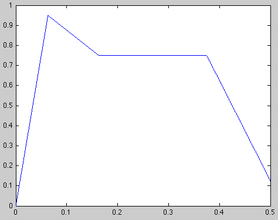

Modeling Sound in simEngineSimple Audio SynthesisCopyright © 2010 Simatra Modeling Technologies This tutorial covers a simple music generator written in DIESEL. It requires that you have an audio card installed that works from within MATLAB in order to hear the music produced. To see if your system is configured properly, simply try running the MATLAB script, twinkle.m, from within the examples/demos/synth directory. >> twinkle The rest of this document discusses the construction of this example script and the underlying DIESEL model found in song.dsl. Low-Frequency-OscillatorThe basic component of sound synthesis is the Low-Frequency-Oscillator, or LFO which can be found in lfo.dsl. This model was written in a way that it can be simulated alone. To see the output of this model run the following.
The commands above should produce a Figure plot like the one below. This is a pure A4 note at 440Hz. We have specifically cleared the variable input because simex requires that only inputs found in the model being executed are specified. This note can be played for one second through your sound device with the commands below. The second column of the output is specified as the first column is the time values from simulation. The value 48000 is the sampling rate that the model uses to produce output. The output is scaled by 0.8 to prevent clicking. Audio passed to sound must be between 1 and -1, which the LFO produces, however, values at the extremes will produce audible clicks. This will be addressed later.
HarmonicsReal instruments don't play notes with a single tone, but actually produce sound as a combination of harmonics. The next model we will examine is one that combines several outputs from the LFO into a single output that comprises several superimposed harmonics. This file is harmonics.dsl. It can be executed using the following commands.
The above commands should produce a Figure plot that looks like the following. This model, like the lfo can produce an output that you can play directly to your sound device. A one second sound can be played with the following commands. Again the output is scaled to avoid clicking, and the sample rate is specified to be 48kHz.
ChordsChords are comprised of multiple harmonic tones combined together. A simple chord model is found in chord.dsl which creates a three tone major chord with an additional octave of the base note given a base note frequency. The chord model uses the harmonics model to produce its tones. This model can also be executed on its own with the following.
The commands above will produce a plot like the one below. Again, the chord can be played on the sound device with the commands below.
ADSRWhen music is played on real instruments the tone is not maintained at a maximum loudness for the duration. Synthesizers often model the varying amplitude of played notes with a component referred to as an ADSR, which stands for Attack, Decay, Sustain and Release. An ADSR model is included in adsr.dsl. Before the phases are discussed, run the following commands to visualize the output of the model.
These commands should produce a Figure plot similar to the one below. First important thing to notice in this model is the use of a streaming input 'key'. This value is sampled at 64Hz and contains a string of ones followed by a string of zeros. The key input is used as a boolean value that corresponds to whether a key on a virtual piano is being pressed or not. Although we requested that the model run for one second, the plot only shows a half second. This is because the streaming input specified in the model requires the model to stop executing if no more input is available. The input provided for key has only 32 samples, equivalent to half a second of simulation. The ADSR has four phases which can be seen distinctly in the plot above. The Attack phase is the rapid increase in amplitude up to a peak and is initiated when the value of key goes from zero to a non-zero value. The Decay phase occurs after the output reaches its peak and decreases until the Sustain level is reached. The output will hold the Sustain level until the key is released (returns to zero). Then, the Release phase occurs which causes the output to decline until zero is reached (or another Attack phase is initiated).
It is the ADSR model that we use to help smooth out the sound between notes to avoid choppiness and clicks that occur when sound reaches peak volume. The ADSR model in 'adsr.dsl' is configurable and the resulting ADSR envelope can be tweaked to provide slightly different envelope shapes. The shape can be controlled by altering the inputs to the model in the same way that scalar inputs were passed to models above. For example, to change the Sustain level, run the following.
MIDI NotesThus far, the DIESEL models have been dealing with sound in terms of frequencies. However, music is written in a notation where each note has a letter name. While musicians rely on note names and graphical representations of notes, computerized audio has another representation in MIDI (Musical Instrument Digital Interface). This document will not address most of the MIDI definition, but will use the MIDI scale to represent notes. In MIDI, notes are tuned on an equal-tempered scale where every note is an equal ratio of one another on a logarithmic scale. MIDI encodes 128 notes from C0 through G10, nearly ten full octaves, numbered from 0 to 127. The table below shows the MIDI note scale.
The frequencies of the notes are determined based on the formula for a 12 part octave (12-TET) given in midiscale.dsl with the frequency of A4 set to 440Hz. This model takes a note number and converts it to a frequency. This model starts with E0, the first note above 20Hz and ends with D#10 the last note below 20kHz. Notes 0 through 3 or values above 123 all produce a frequency of 0, no sound. This model only produces the frequency values for notes and therefore can't be run by itself to produce audio, but you can run it to see what the frequencies are for the MIDI scale. To do this, run the following.
This code checks the note numbers 0 through 131 and displays them in the same orientation as the table above. Notice how the frequncy value for the first and last notes are 0, and only frequencies between 20Hz and 20kHz are produced. Putting it all togetherThe final model in this series is the model found in song.dsl. This model combines the above models to create a translator that takes a stream of notes and chords in MIDI note encoding and produces an audio music stream that can be played through the sound device. This model has two input channels, one for melody notes, and one for chords that are each run through a midiscale.dsl model. The melody is played with single notes using the harmonics.dsl model, while the chords are created with the chord.dsl model. Both channels are passed through separate adsr.dsl instances to smooth out the sound before being combined together to produce the final output. One trick that we employ is to use the notes and chords inputs to both generate the frequencies as well as trigger the ADSR. To make this happen smoothly, we add two state variables that hold the last non-zero value for notes and chords. These states are passed to the midiscale.dsl instances instead of the input directly so that a note will continue to sound during the release phase of the ADSR. A zero in the input causes the ADSR to switch to the release phase, which must occur before another attack phase (another note or chord) is possible. Inside the MATLAB script, twinkle.m you can see that each note (quarter, half and whole) is comprised of two phases built with the ones() and zeros() functions. The length of the overall string of ones and zeros determines the length of the note, and the relative lengths between ones and zeros controls the shape of the ADSR based on when the release phase is triggered. The value for n will set the key for the song, and the phrases are built relative to this value. To change the speed at which the song is played, you can either change the definition of the notes themselves, or change the sampling rate in song.dsl from 64 samples per second, to another value. Try for yourself
|
||||||||||||||||||||||||||||||||||||||||||||||||||||||||||||||||||||||||||||||||||||||||||||||||||||||||||||||||||||||||||||||||||||||||||||||||||||||||||||||||||||||||||||||||||||||||||